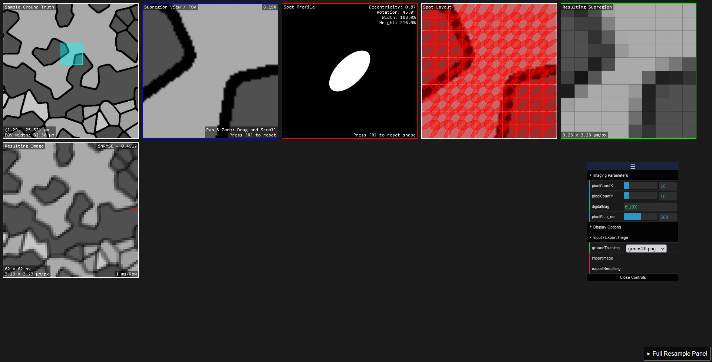

ImgBeamer
Try it live here, no setup or installation required!
Simple demo tool of the image formation1 process used in a Scanning Electron Microscope (SEM).
A quick start guide is available here.
Description of Stages / Boxes
- Sample Ground Truth (map navigation)
- Subregion/ROI (Region of Interest) View ("zoomed" view)
- Spot Profile
- Spot Content
- Spot Signal (rgba)
- Spot Layout
- Sampled Subregion
- Resulting Subregion
- Resulting Image (full, "virtual SEM")
Screenshot

Notes
- Minor pixel value differences in virtualSEM; improved, but could be due to sampling from downsized sampling of the larger full image
- This is possibly due to canvas "alpha premultiplication", see here.
- The application design is being documented here.
mainis the stable branch,cas741is an outdated development branch.
Developer Instructions and Notes
- The main application is implemented entirely in javascript
- You can run it either using the auto-deployed GitHub pages version ("live" link above).
- Or you can run it on your own machine with a local web server pointed to the
app/folder- either XAMPP or even just a python HTTP server with
python -m http.server --directory app/
- either XAMPP or even just a python HTTP server with
- jsdoc-generated documentation pages are available here
- Tests for the image metrics are available under
tests/:ogis code for "original" (unmodified) image, andfantrefers to a down-sampled image using Fant's algorithm2.js-tests/: for javascript implementations- open the
index.htmlpage (using a local web server as described above) and look in the webconsole. - Optionally, an online hosted version exists here.
- mainly in the webconsole, you can use
run_all(fant)where iffantis true, all the image comparison tests will be run using the "fant-sampled" image as the ground truth. Otherwise (false), it will use the "original" image as the ground truth instead.
- open the
py-tests/: for python implementations- Install Python v3.10.6 or better (has not been tested on other versions)
- You'll likely need to run
pip install sewaronce to get the required image metrics module/library. - run
imgquality.py
- The other folders and files are from preliminary and manual testing that was done in the past.
References
- “Image Formation.” In Scanning Electron Microscopy and X-Ray Microanalysis, edited by Joseph I. Goldstein, Dale E. Newbury, Joseph R. Michael, Nicholas W.M. Ritchie, John Henry J. Scott, and David C. Joy, 93–110. New York, NY: Springer, 2018. https://doi.org/10.1007/978-1-4939-6676-9_6.
- Fant, Karl M. “A Nonaliasing, Real-Time Spatial Transform Technique.” IEEE Computer Graphics and Applications 6, no. 1 (January 1986): 71–80. https://doi.org/10.1109/MCG.1986.276613.